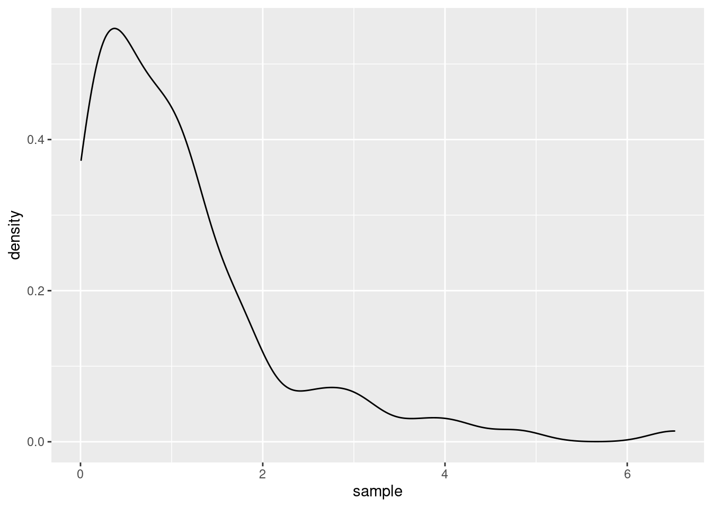
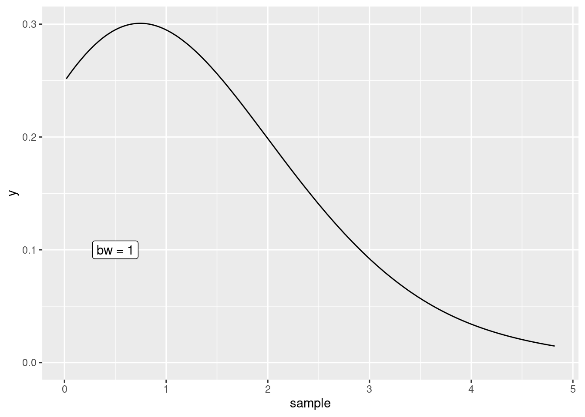
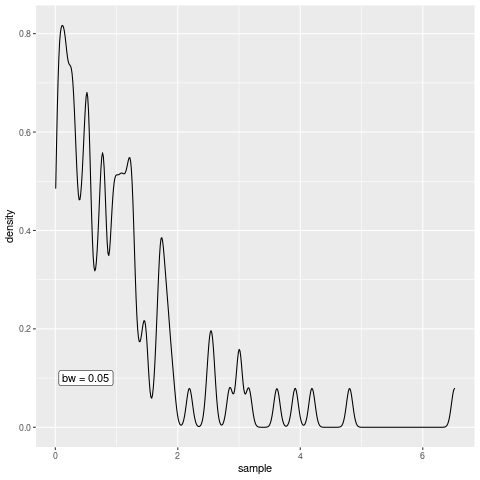
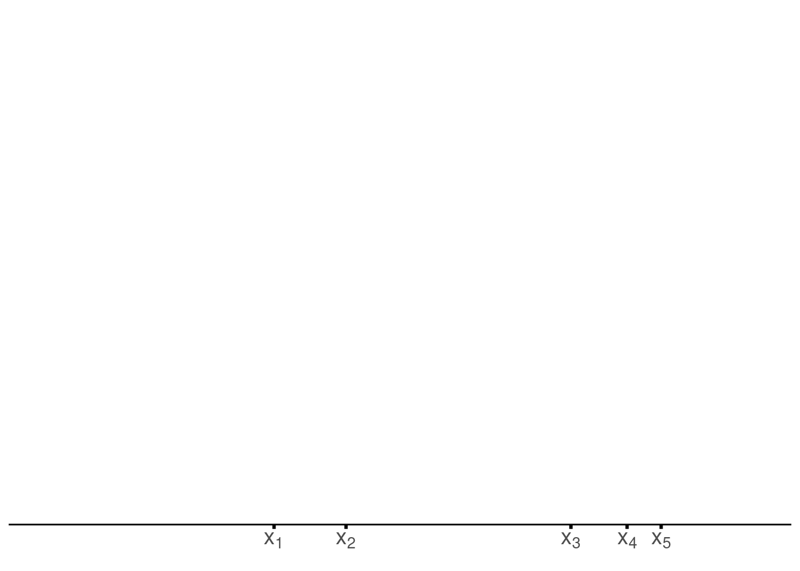
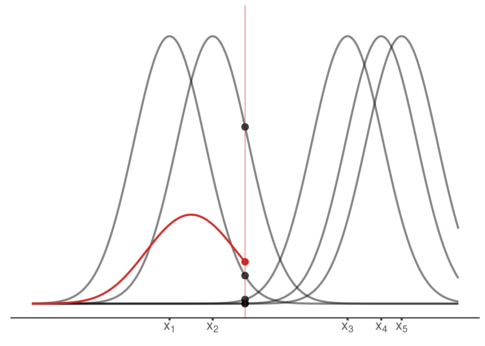
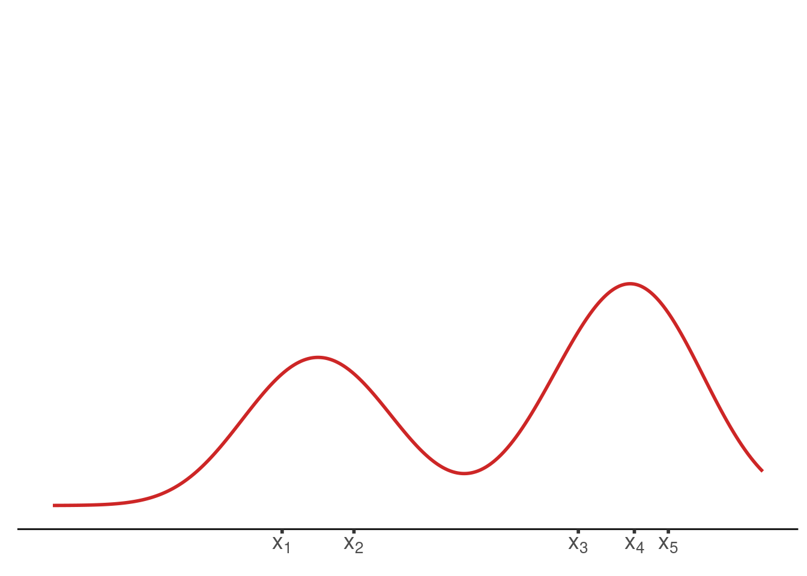

Animating kernel density estimators
For my first post on this blog I decided to create an animation using the animation package. To give this animation some purpose let me demonstrate how kernel density estimators work with the help of an animation.
In general, kernel density estimators are, as is kind of obvious by the name, used to estimate the underlying density of a random sample. For instance, imagine that we have a sample drawn from an some unknown distribution.
n <- 100
sample <- rexp(n)Then, assuming that we do not actually know that the current sample was drawn from an exponential distribution, we might want to estimate the density and see if the estimate fits to some well-known parametric family of distributions. With the help of ggplot() and geom_density() this is straightforward.
library(tidyverse)
ggplot() +
geom_density(aes(x = sample))
The underlying procedure to generate the plot it to use a kernel density estimator \(\hat{f}_h\) in order to estimate the true underlying density \(f\) by using the formula
\[ \hat{f}_h(x) = \frac{1}{nh} \sum_{k = 1}^{n} K\Big(\frac{x - x_k}{h}\Big) \]
for all \(x \in \mathbb{R}\) where \(n\) is the sample lengh and \(h > 0\) is a smoothing parameter that needs to be chosen and \(K\) is a “suitable” function. Usually, this parameter \(h\) is called bandwidth and \(K\) is called a kernel function which is often to be the density of a probability distribution.
The Bandwidth
In geom_density(), the default kernel function is the Gaussian density and the bandwidth can be tweaked through the bw argument.
h <- 1
ggplot() +
geom_density(aes(x = sample), bw = h) +
annotate(
"label",
x = 0.5,
y = 0.1,
label = glue::glue("bw = {h}")
)
Of course, I could now create multiple plots and change the value if h each time to demonstrate the effect of the bandwidth but the point of this post was to create an animation. So let’s do that instead.
Nevertheless, to create an animation, we need to be able to create multiple plots. Therefore, let us use the previous code and wrap a function depending on h around that. This function will be our plot generator depending on the bandwidth.
plot_gen <- function(h) {
g <- ggplot() +
geom_density(aes(x = sample), bw = h) +
annotate(
"label",
x = 0.5,
y = 0.1,
label = glue::glue("bw = {h}")
)
print(g)
# For the animation we need this to be printed
}Now that we have that, define a function that creates all the plots we want to see in our animation, i.e. we create the animation frame by frame. This function can then be passed to saveGIF() from the animation package which then renders the animation for us. Creating a gif in R is as simple as that.
all_the_plots <- function() {
map(seq(0.05, 0.5, 0.05), plot_gen)
}
library(animation)
saveGIF(all_the_plots())[1] TRUE
As you can see, the bandwidth really is a smoothing parameter. Of course, too much smoothing may not yield great results so the parameter needs to be chosen with care but let us not worry about this in this blog post.
The Actual Estimation Procedure
Let us create another animation to visualize how kernel density estimation works on a more basic level, i.e. . In order to do so, notice that if the kernel \(K\) is a continuous density function of a random variable \(X\) (e.g. a Gaussian random variable), then the density function of the random variable \((X + x_0)h\) where \(x_0 \in \mathbb{R}\) and \(h > 0\) is given by \(K((X - x_0)/h)/h.\)
Consequently, in the case of standard Gaussian random variables \(X\), the kernel density estimator is nothing but the average of the densities of \(n\) Gaussian random variables with individual means \(x_k\), \(k = 1, \ldots, n,\) and common standard deviation \(h.\)
Therefore, for a given sample you can run a kernel density estimation by taking the following steps:
- Check where each data point \(x_k\) is located on the x-axis
- For each data point \(x_k\) draw a Gaussian density \(f_k\) with standard deviation \(h\) and mean \(x_k\)
- For each \(x \in \mathbb{R}\) check what are the values of \(f_k\), \(k = 1, \ldots, n,\) at \(x\) and average these.
So to create a visualization of the kernel density estimation principle, we simple create a function that plots each of those steps for us. Finally, we execute all of these functions and send them to saveGIF().
We begin by computing the data we need to create the plots later on, i.e. we simulate a sample and compute the values of the densities.
compute_density <- function(x_0, h, K = dnorm) {
xx <- seq(-6, 6, 0.001) * h
tibble(
x = xx,
density = K((x - x_0) / h) / h
)
}
set.seed(123)
# For the sake of demonstration we use a
# small uniformly distributed sample here
x_sample <- runif(5, -5, 5)
h <- 1
tib <- tibble(
k = seq_along(x_sample),
density = map(x_sample, compute_density, h = h)
) %>%
unnest(density)Then, it becomes time for our first step, i.e. check where the sample values are located.
draw_axis <- function(x_sample, tib) {
labs <- glue::glue("$x_{seq_along(x_sample)}$")
labs <- latex2exp::TeX(labs)
p <- ggplot(data = NULL, aes(x = x_sample)) +
theme_minimal() +
theme(
axis.line.x = element_line(),
panel.grid = element_blank(),
axis.ticks = element_line(size = 1),
axis.text = element_text(size = 14)
) +
scale_x_continuous(
limits = c(min(tib$x), max(tib$x)),
breaks = sort(x_sample),
minor_breaks = NULL,
labels = labs
) +
scale_y_continuous(
breaks = NULL,
limits = c(0, max(tib$density) + 0.025)
) +
labs(x = element_blank())
p
}
p <- draw_axis(x_sample, tib)
p
Once we have that, we draw the kernels.
draw_kernel <- function(p, tib) {
p <- p +
geom_line(data = tib, aes(x, density, group = k), size = 1) +
geom_segment(
aes(
x = x_sample,
xend = x_sample,
y = 0,
yend = dnorm(0)
),
linetype = 2
) +
labs(y = element_blank())
p
}
draw_kernel(p, tib)
Next, average the densities at an arbitrary position \(x_0.\) If we can do that, then we can iterate through different values of \(x_0.\)
plot_until_x0 <- function(tib, x0) {
labs <- glue::glue("$x_{seq_along(x_sample)}$")
labs <- latex2exp::TeX(labs)
tib_x0 <- tib %>%
filter(x <= x0) %>%
group_by(x) %>%
summarise(est = mean(density), .groups = "drop")
anim_col <- 'firebrick3'
g <- ggplot() +
geom_line(
data = tib,
aes(x, density, group = k),
alpha = 0.5,
size = 1
) +
geom_point(
data = filter(tib, x == x0),
aes(x, density),
#col = anim_col,
alpha = 0.75,
size = 3
) +
geom_vline(xintercept = x0, col = anim_col, alpha = 0.5) +
geom_point(
data = slice_tail(tib_x0, n = 1),
aes(x, est),
col = anim_col,
size = 3
) +
geom_line(
data = tib_x0,
aes(x, est),
col = anim_col,
size = 1
) +
theme_classic() +
theme(
axis.line.x = element_line(),
axis.line.y = element_blank(),
panel.grid = element_blank(),
axis.ticks = element_line(size = 1),
axis.text = element_text(size = 14)
) +
scale_x_continuous(
limits = c(min(tib$x), max(tib$x)),
breaks = sort(x_sample),
minor_breaks = NULL,
labels = labs
) +
scale_y_continuous(
breaks = NULL,
limits = c(0, max(tib$density) + 0.025)
) +
labs(x = element_blank(), y = element_blank())
print(g)
}
x0 <- (0)
plot_until_x0(tib, x0)
Last but not least, we may want to display the estimated density without the underlying kernels.
final_plot <- function(tib) {
labs <- glue::glue("$x_{seq_along(x_sample)}$")
labs <- latex2exp::TeX(labs)
tib_x0 <- tib %>%
group_by(x) %>%
summarise(est = mean(density), .groups = "drop")
anim_col <- 'firebrick3'
g <- tib_x0 %>%
ggplot() +
geom_line(
aes(x, est),
col = anim_col,
size = 1
) +
theme_classic() +
theme(
axis.line.x = element_line(),
axis.line.y = element_blank(),
panel.grid = element_blank(),
axis.ticks = element_line(size = 1),
axis.text = element_text(size = 14)
) +
scale_x_continuous(
limits = c(min(tib$x), max(tib$x)),
breaks = sort(x_sample),
minor_breaks = NULL,
labels = labs
) +
scale_y_continuous(
breaks = NULL,
limits = c(0, max(tib$density) + 0.025)
) +
labs(x = element_blank(), y = element_blank())
print(g)
}
final_plot(tib)
Finally, we have all the ingredients to create the animation by collecting all of these functions in a wrapper function and using it in conjunction with saveGIF().
gif <- function(x_sample, tib) {
p <- draw_axis(x_sample, tib)
map(1:3, ~print(p))
p <- draw_kernel(p, tib)
map(1:5, ~print(p))
map(seq(min(tib$x), max(tib$x), 0.5), ~plot_until_x0(tib, .))
map(1:15, ~final_plot(tib))
}
saveGIF(gif(x_sample, tib),
interval = 0.4, # animation speed
ani.width = 720,
ani.height = 405,
movie.name = "kernelAnimation.gif")
Thus, we have created a short animation that illustrates the kernel density estimation procedure. Probably, there is some room for improving the animation by fine tuning the plots, tweaking with the animation speed or the number of frames. For now, though, let us leave everything as it is.
But feel free to let me know what could be improved in the comments. Similarly, if you want to leave any other form of feedback, feel free to roam the comment section too. Finally, if you enjoyed what you have seen here but do not want to bother writing a comment, you may simply hit the applause button instead.